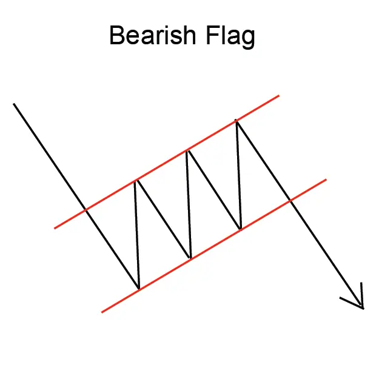
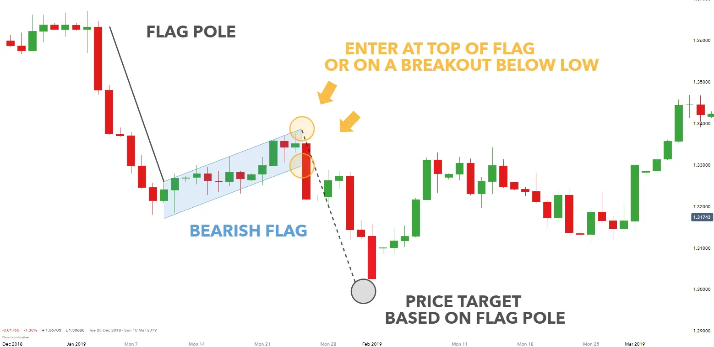

बेरिश फ्लैग पैटर्न एक डाउनट्रेंड के संकेत चार्ट पैटर्न होता है जो दो पतन के बीच एक संक्षेप्त संकेतकरण के पुनर्मूल्यांकन द्वारा
संरचित होता है। फ्लैग पैटर्न आमतौर पर एक झंडा या झंडी की तरह दिखाता है, जिससे उसका नाम है।
बेरिश फ्लैग पैटर्न एक मजबूत डाउनट्रेंड का संकेत देता है और ट्रेडर इसे ट्रेडिंग के अवसर के रूप में उपयोग करते हैं। पैटर्न में
प्रवेश करने के लिए, ट्रेडर आमतौर पर झंडी के नीचे दिशा में एक 'ब्रेकआउट' ढूँढ़ते हैं,
जो झंडी के ऊपरी सीमा से दूरी के समान दूरी होती है।
झंडी की लंबाई झंडी की ऊचाई से
झंडी की निचली भांति टाइमफ़्रेम तक का समयविदायी होता है।
बेरिश फ्लैग पैटर्न एक विश्वसनीय ट्रेडिंग पैटर्न नहीं है, लेकिन यह एक
मजबूत डाउनट्रेंड का संकेत देता है और ट्रेडर इसे ट्रेडिंग
के अवसर के रूप में उपयोग करते हैं।
